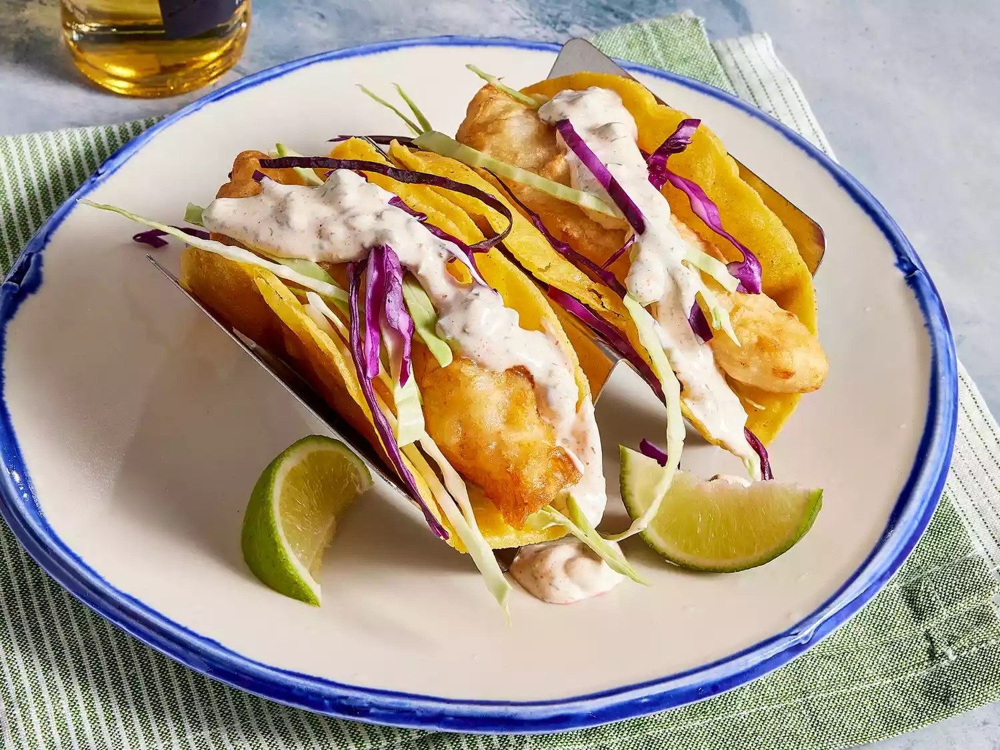

Fish Tacos Recipe

Description
Fish tacos are a delicious and healthy alternative to traditional tacos. They are made with grilled or fried fish, fresh vegetables, and a variety of toppings. Fish tacos are a great option for a quick and easy weeknight meal or a fun and festive dinner party. They are also a great way to introduce seafood to picky eaters.
Ingredients
Beer Batter:
- 1 cup all-purpose flour
- 2 tablespoons cornstarch
1 teaspoon baking powder
½ teaspoon salt
1 cup beer
1 egg
White Sauce:
- ½ cup plain yogurt
- ½ cup mayonnaise
- 1 lime, juiced
- 1 jalapeno pepper, minced
- 1 teaspoon minced capers
- 1 teaspoon ground cayenne pepper
- ½ teaspoon dried oregano
- ½ teaspoon ground cumin
- ½ teaspoon dried dill weed
Fish Tacos:
- 1 quart oil for frying
- 1 pound cod fillets, cut into 2 to 3 ounce portions
- 2 tablespoons all-purpose flour, or more as needed
- 1 (12 ounce) package corn tortillas
- ½ medium head cabbage, finely shredded
Steps
- Make beer batter: Combine flour, cornstarch, baking powder, and salt in a large bowl. Blend beer and egg in a separate bowl, then quickly stir into flour mixture until combined with a few lumps remaining.
- Make white sauce: Mix together yogurt and mayonnaise in a medium bowl. Gradually stir in fresh lime juice until consistency is slightly runny. Season with jalapeño, capers, cayenne, oregano, cumin, and dill.
- Start fish tacos: Heat oil in a deep-fryer to 375 degrees F (190 degrees C).
- Dust fish pieces lightly with flour. Set aside.
- Dip floured fish pieces into beer batter. Set aside.
- Fry in hot oil until crisp and golden brown. Drain on paper towels. Lightly fry tortillas in hot oil until just crisped, but not too crisp. Drain on paper towels.
- Place fried fish in tortillas; top with shredded cabbage and white sauce.
Home